방수산업기사 (2020-08-22 기출문제)
1과목: 방수일반
1. 다음은 소음·진동관리법령에 따른 공사장 방음시설의 설치에 관한 기준 내용이다. ( )안에 알맞은 것은?
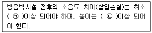
- ㉠ 5dB, ㉡ 2.5m
- ㉠ 5dB, ㉡ 3m
- ㉠ 7dB, ㉡ 2.5m
- ㉠ 7dB, ㉡ 3m
(정답률: 60%)

2. 철근콘크리트공사에서 다음과 같이 정의되는 철근의 명칭은?
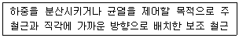
- 배력근
- 압축철근
- 인장철근
- 보조철근
(정답률: 64%)
3. 건축도면의 치수 기입 방법에 관한 설명으로 옳은 것은?
- 치수는 특별히 명시하지 않는 한 마무리 치수로 표시한다.
- 치수 기입은 치수선 중앙 아랫부분에 기입하는 것이 원칙이다.
- 치수 기입은 치수선에 평행하게 도면의 오른쪽에서 왼쪽으로, 위로부터 아래로 읽을 수 있도록 기입한다.
- 같은 도면에서 치수선의 양끝은 화살과 점을 혼용해서 사용할 수 있으며 치수선이 작은 것은 점으로 표시한다.
(정답률: 74%)
4. 지반 위에 있는 콘크리트 바닥판이 수축에 의하여 표면에 균열이 생기는 것을 방지하기 위하여 설치하는 것은?
- 시공줄눈
- 조절줄눈
- 차장줄눈
- 콜드조인트
(정답률: 60%)
5. 다음 중 재해발생 시 가장 먼저 조치하여야 하는 사항은?
- 원인조사
- 대책수립
- 목격자 확보
- 재해자 응급조치
(정답률: 93%)
6. 창호의 재질별 기호가 옳지 않은 것은?
- W: 목재
- SS: 강철
- P: 합성수지
- A: 알루미늄합금
(정답률: 74%)
7. 다음설명에 알맞은 석재의 종류는?
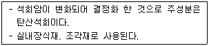
- 대리석
- 화강암
- 감람석
- 응회암
(정답률: 84%)
8. 하인리히(W.H Heinrich)의 재해예방 4원칙에 속하지 않는 것은?
- 예방 가능의 원칙
- 손실 우연의 원칙
- 재현 불가의 원칙
- 대책 선정의 원칙
(정답률: 67%)
9. 연평균 근로자수가 1000명인 사업장에서 한 해 동안 15명의 사상자가 발생하였을 경우 연천인율은? (단, 근로자는 1일 8시간, 연간 250일을 근무하였다.)
- 10
- 15
- 20
- 25
(정답률: 72%)
10. 목재 건조법 중 천연건조에 관한 설명으로 옳지 않은 것은?
- 넓은 잔적장소가 필요하다.
- 건조 소요시간이 오래 걸린다.
- 평형함수율 이하의 건조가 용이하다.
- 기후와 입지, 자연조건의 영향을 많이 받는다.
(정답률: 84%)
11. 곡면판이 지니는 역학적 특성을 응용한 구조로서 외력은 주로 판의 면내력으로 전달되기 때문에 경량이고 내력이 큰 구조물을 구성할 수 있는 것은?
- 셀구조
- 절판구조
- 아치구조
- 현수구조
(정답률: 73%)
12. 무재해운동의 이념 3원칙에 속하지 않는 것은?
- 무의 원칙
- 참가의 원칙
- 합의의 원칙
- 선취해결의 원칙
(정답률: 72%)
13. 콘크리트 혼화제 중 AE제의 사용효과에 관한 설명으로 옳지 않은 것은?
- 골재분리와 블리딩이 감소된다.
- 콘크리트의 작업성이 개선된다.
- 콘크리트의 압축강도가 증대된다.
- 콘크리트의 동결·융해에 대한 저항성이 증대된다.
(정답률: 67%)
14. 철골구조에 관한 설명으로 옳지 않은 것은?
- 큰 간사이(span) 구조가 가능하다.
- 부재가 세장하므로 좌굴이 생기기 쉽다.
- 내화성이 우수하여 별도의 피복이 필요 없다.
- 구조물 자체의 중량이 철근콘크리트구조에 비하여 가볍다.
(정답률: 71%)
15. 다음과 같은 형태를 갖는 지붕 형식은?
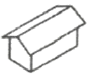
- 박공지붕
- 합각지붕
- 모임지붕
- 방형지붕
(정답률: 67%)
16. 다음의 평면표시기호가 의미하는 것은?
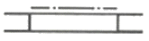
- 이중창
- 미서기창
- 오르내리창
- 셔터달린창
(정답률: 71%)
17. 건축도면에서 굵은 실선으로 표시되는 것은?
- 기준선
- 절단선
- 단면선
- 치수선
(정답률: 57%)
18. 홈통에 관한 설명을 옳지 않은 것은?
- 처마홈통과 선홈통을 연결하는 경사홈통을 깔대기 홈통이라 한다.
- 처마 끝에 수평으로 설치하여 빗물을 받는 홈통을 처마홈통이라 한다.
- 처마홈통에서 내려오는 빗물을 지상으로 유도하는 수직 홈통을 선홈통이라 한다.
- 두 개의 지붕면이 만나는 자리 또는 지붕면과 벽면이 만나는 수평지붕골에 쓰이는 홈통을 장식홈통이라 한다.
(정답률: 70%)
19. 보통 포틀랜드 시멘트의 응결시간 기준으로 옳은 것은? (단, 비카시험의 경우)
- 60분 이상 10시간 이하
- 60분 이상 12시간 이하
- 90분 이상 10시간 이하
- 90분 이상 12시간 이하
(정답률: 50%)
20. 현장타설 콘크리트 말뚝 중 심플렉스 파일을 개량한 것으로 지내력을 증대하기 위하여 말뚝선단에 구근을 형성하는 것은?
- 페데스탈 파일
- 컴프레솔 파일
- 레이몬드 파일
- 프리택트 파일
(정답률: 44%)
2과목: 방수재료
21. 주성분이 다음과 같은 시멘트 액체 방수제의 종류는?
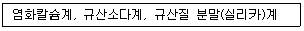
- 무기질계
- 유기질계
- 폴리머계
- 가황 고무계
(정답률: 55%)
22. 합성고분자계 방수 시트의 종류 중 일반복합형 복합시트에 속하지 않는 것은?
- 가황 고무계
- 비가황 고무계
- 염화비닐 수지계
- 열가소성 엘라스토머계
(정답률: 35%)
23. 다음 설명에 알맞은 수 팽창성 벤토나이트 방수시트의 품질 시험 종류는?
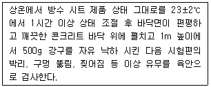
- 정수압 시험
- 낙구 충격 시험
- 인열 강도 시험
- 인장 강도 시험
(정답률: 70%)
24. 천연의 유기섬유를 원료로 한 원지에 스트레이트 아스팔트를 함침시켜 만든 방수재료는?
- 아스팔트 루핑
- 아스팔트 펠트
- 아스팔트 컴파운드
- 아스팔트 프라이머
(정답률: 59%)
25. 합성고분자계 방수 시트에 요구되는 성능에 속하지 않는 것은?
- 인장 성능
- 인열 성능
- 흘러내림 저항 성능
- 열화 처리 후의 인장 성능
(정답률: 75%)
26. 건축용 실링재를 용도에 따라 구분할 경우, 글레이징에 사용하는 실링재는?
- A형
- C형
- F형
- G형
(정답률: 62%)
27. 시멘트 혼입 폴리머계 방수재의 성능 시험 항목에 속하지 않는 것은?
- 내산성
- 내균열성
- 부착강도
- 내잔갈림성
(정답률: 48%)
28. 개량 아스팔트 방수시트를 1류와 2류로 구분하는 기준이 되는 것은?
- 용도
- 겉모양
- 온도 특성
- 재료 구성
(정답률: 50%)
29. 규산질계 분말형 도포 방수재의 품질시험 항목에 속하지 않는 것은?
- 부착 강도
- 압축 강도
- 내잔갈림성
- 온도 의존성
(정답률: 47%)
30. 방수재를 찢으려고 하는 힘에 대한 저항능력을 확인하는 시험은?
- 인열성능 시험
- 압축성능 시험
- 접합성능 시험
- 내구성능 시험
(정답률: 44%)
31. 시멘트 액체형 방수제의 성능 기준이 다음과 같은 성능항목은?
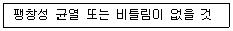
- 부착성
- 안정성
- 내진갈림성
- 내움푹패임성
(정답률: 50%)
32. 폴리우레아 수지 도막 방수재의 인장강도 품질기준으로 옳은 것은?
- 8N/mm2 이상
- 16N/mm2 이상
- 24N/mm2 이상
- 32N/mm2 이상
(정답률: 59%)
33. 방수재료의 수밀성능을 확인하기 위한 시험은?
- 내후성 시험
- 내투수성 시험
- 내약품성 시험
- 내충격성 시험
(정답률: 72%)
34. 건설용 도막 방수재의 주요 원료에 따른 구분에 속하지 않는 것은?
- 우레탄 고무계
- 아크릴 수지계
- 염화비닐 수지계
- 고무 아스팔트계
(정답률: 39%)
35. 다음의 폴리우레아 수지 도막방수재의 품질기준에 알맞은 항목은?
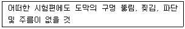
- 겉모양
- 부착 성능
- 내피로 성능
- 파단시 신장률
(정답률: 50%)
36. 방수재료에 요구되는 성능과 가장 거리가 먼 것은?
- 수밀성
- 흡습성
- 내마모성
- 내풍압성
(정답률: 56%)
37. 방수재료를 정형재료와 부정형재료로 구분할 경우, 다음 중 정형재료에 속하지 않는 것은?
- 분말형
- 시트형
- 패널형
- 매트형
(정답률: 64%)
38. 한국산업표준에 따른 아스팔트 펠트 제품의 종류에 속하지 않는 것은?
- 340품
- 440품
- 540품
- 650품
(정답률: 50%)
39. 건설용 도막방수재 중 우레탄 고무계 1류의 성능 기준으로 옳지 않은 것은?
- 인장강도 : 2.5N/mm2 이상
- 인열강도 : 7.3N/mm2 이상
- 파단 시의 신장률 : 450% 이상
- 가열 신축 성상(신축률) : -4% 이상 1% 이하
(정답률: 24%)
40. 한국산업표준(KS F 4934)에 따른 자착식형 고무화 아스팔트 방수시트 제품의 최소 두께는?
- 0.5mm
- 1.4mm
- 2.5mm
- 3.2mm
(정답률: 52%)
3과목: 방수시공
41. 시트방수재와 도막방수재의 적층 복합방수공법에서 1층에 사용되는 것은? (단, 평탄부위로, 통기노출(M-coMiM)인 경우)
- 프라이머
- 시트방수재
- 도박방수재
- 보호용 패널
(정답률: 25%)
42. 벤토나이트 방수공사에 사용되는 보호층의 종류로 옳지 않은 것은?
- 콘크리트 : 두께 30mm 이상
- 하드보드 : 두께 6.4mm 이상
- 섬유형 방수성 보호판 : 두께 12.7mm 이상
- 아스팔트섬유 혼입 보호판 : 두께 3.9mm 이상
(정답률: 35%)
43. 자착형 시트 방수공사에서 고무 아스팔트계 자착형 방수시트의 보호 및 마감의 표준에 속하지 않는 것은?
- 자갈
- 마감도료
- 현장타설 콘크리트
- 아스팔트 콘크리트
(정답률: 40%)
44. 폴리머 시멘트 모르타르 방수공사에서 수직 부위의 초벌 바름 도막두께의 표준은?
- 1~3mm
- 4~6mm
- 7~9mm
- 10~12mm
(정답률: 40%)
45. 지하구조물에 적용되는 외면 방수재료(방수층)가 갖추어야 하는 요건 중 시공 용이성에 속하지 않는 것은?
- 시공의 신속성 확보
- 공정의 단순성 확보
- 단차 하부 공간의 수밀성 확보
- 바탕면 표면 조건에 대한 대응성 확보
(정답률: 41%)
46. 지붕에서 통상의 보행을 위한 방수층의 보호 및 마감의 표준에 속하는 것은?
- 자갈깔기
- 우레탄 포장재
- 현장타설 콘크리트
- 아스팔트 콘크리트
(정답률: 50%)
47. 방수공사에서 시멘트, 모래와 방수제 및 물을 혼합하여 반축한 것은?
- 백업재
- 방수용액
- 방수 모르타르
- 방수 시멘트 페이스트
(정답률: 74%)
48. 아스팔트 방수공사에서 지붕 방수층의 보호 및 마감의 시공 표준으로 옳지 않은 것은? (단, 현장타설 콘크리트의 경우)
- 평면부 콘크리트에는 신축줄눈을 설치하지 않는다.
- 방수층이 완성된 다음 단열재를 깔고 그 위에 절연용 시트를 깐다.
- 치켜올린부의 보호 및 마감을 건식공법으로 할 경우에는 공사시방에 따른다.
- 콘크리트에는 균열방지를 위한 와이어메시를 타설 두께의 중간 위치에 삽입한다.
(정답률: 55%)
49. 개량 아스팔트 시트 방수공사에서 개량 아스팔트 방수시트를 붙이는 방법의 표준으로 가장 알맞은 것은?
- 접착제를 개량 아스팔트 시트의 뒷면에 균일하게 도포하고, 눌러서 붙인다.
- 프라이머를 개량 아스팔트 시트의 뒷면과 바탕에 균일하게 도포하고, 눌러서 붙인다.
- 토치로 개량 아스팔트 시트의 앞면을 균일하게 가열하여 개량 아스팔트를 용융시켜 붙인다.
- 토치로 개량 아스팔트 시트의 뒷면과 바탕을 균일하게 가열하여 개량 아스팔트를 용융시키고, 눌러서 붙인다.
(정답률: 40%)
50. 다음 중 고무 아스팔트계 자착형 방수층의 적용이 가장 곤란한 부위는? (단, 비노출의 경우)
- 차양(RC)
- 지붕(RC)
- 실내 욕실(RC)
- 실내 주차장(RC)
(정답률: 44%)
51. 도막방수공사에서 보강포의 사용목적과 가장 거리가 먼 것은?
- 균일한 도막두께(설계두께)의 확보
- 자외선 등으로부터의 도막 방수층 보호
- 치켜올림부, 경사부에서의 방수재의 흘러내림 방지
- 바탕에 균열이 생겼을 경우 방수층의 동시 파단 위험 경감
(정답률: 64%)
52. 규산질계 도포 방수공사에서 방수재의 도포방법에 관한 설명으로 옳지 않은 것은?
- 방수재를 솔로 바를 경우에는 바름 방향이 일정하도록 한다.
- 방수재는 솔, 흙손, 뿜칠 및 롤러 등으로 콘크리트면에 균일하게 도포한다.
- 앞 공정의 도포 후 24시간 이상의 간격을 두고 다음 공정의 도포를 시작할 경우에는 물뿌리기를 한다.
- 앞 공정에서 도포한 방수재가 완전히 건조하여 손가락으로 눌러 하얗게 묻어 나오는 상태로 되었을 때 다음 공정의 도포를 시작한다.
(정답률: 44%)
53. 폴리머 시멘트 모르타르의 비빔 및 사용 가능 시간에 관한 설명으로 옳은 것은?
- 폴리머 시멘트 모르타르의 비빔은 손비빔을 원칙으로 한다.
- 폴리머 시멘트 모르타르는 비빔 후, 20℃인 경우 2시간 이내로 사용한다.
- 비빔 전에 소정량의 폴리머 분산제와 시험 비빔에 의하여 결정한 물을 혼합한다.
- 혼화재료, 시멘트, 모래, 순으로 믹서에 투입하고 전체가 균질하게 되도록 건비빔 한다.
(정답률: 44%)
54. 옥상녹화 방수공사에 관한 설명으로 옳지 않은 것은?
- 녹화층에 적용되는 재료는 방근성을 가지고 있어야 한다.
- 아스팔트 시트가 합성 고분자 시트보다 방근성이 우수하다.
- 방근성능 시험방법이 규정되어 있는 한국산업표준은 KS F 4938이다.
- 시멘트계 방수재는 내균열성이 없어 옥상 녹화용 방수층 및 방근층 재료로 사용이 곤란하다.
(정답률: 48%)
55. 지붕 슬래브, 실내의 바닥 등에서 방수층 마감을 보호도료(top coat) 도포로 하는 경우 바탕물매의 표준은?
- 1/20~1/10
- 1/50~1/20
- 1/100~1/50
- 1/150~1/100
(정답률: 38%)
56. 다음은 방수시공 직전의 바탕 형상의 표준에 관한 설명이다. ( )안에 알맞은 것은?
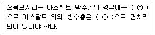
- ㉠ 원형, ㉡ 직각
- ㉠ 직각, ㉡ 원형
- ㉠ 삼각형, ㉡ 직각
- ㉠ 직각, ㉡ 삼각형
(정답률: 55%)
57. 도막 방수공사에서 방수재의 도포에 관한 설명으로 옳지 않은 것은?
- 방수재의 겹쳐 바르기 또는 이어 바르기의 폭은 100mm내외로 한다.
- 보강포 위에 도포하는 경우, 침투하지 않은 부분이 생기지 않도록 주의하면서 도포한다.
- 방수재의 겹쳐 바르기의 도포방향은 앞 공정에서의 도포방향과 직교해서 실시한다.
- 고무 아스팔트계 도막방수재의 외벽에 대한 스프레이 시공은 위에서부터 아래의 순서로 실시한다.
(정답률: 44%)
58. 합성고분자계 시트 방수공사에서 시트 붙이기에 관한 설명으로 옳지 않은 것은?
- 시트의 접합부는 원칙적으로 물매 위쪽의 시트가 물매 아래쪽 시트의 위에 오도록 겹친다.
- 합성고무계 전면접착(S-RuF)공법에서는 일반부 시트를 붙이기 전에 바탕의 오목 모서리에 200×200mm 정도의 비가황고무계 방수시트로 덧붙임한다.
- 합성수지계 전면접착(S-PIF)공법에서는 일반부 시트를 붙이기 전에 오목 및 블록모서리부에 성형 고정물을 붙인다.
- 합성고무계 전면접착(S-RuF)공법에서의 ALC패널 단면 접합부에는 접착제를 바르기 전에 폭 50mm정도의 절연용 테이프를 붙인다.
(정답률: 27%)
59. 개량 아스팔트시트 방수공사에서 지하 외벽의 방수층 표면에 부착하여 모래 등 되메우기재의 충격 및 침하로부터 방수층을 보호하는데 사용되는 것은?
- 누름철물
- 보호완충재
- 방수 실링재
- 본드 브레이커
(정답률: 64%)
60. 합성고분자계 시트 방수공사에서 가황 고무계 시트 방수·접착공법(S-RuF, S-RuTF)의 보호 및 마감의 표준에 속하는 것은?
- 마감도료
- 콘크리트 블록
- 현장타설 콘크리트
- 아스팔트 콘크리트
(정답률: 53%)
4과목: 방수유지관리
61. 지하구조물의 누수 보수에 사용되는 재료에 요구되는 성능 중 누수균열에 작용하는 물리적 영향에 대한 요구 성능에 속하지 않는 것은?
- 불투수 성능
- 온도의존 성능
- 습윤면 부착 성능
- 수중 유실 저항 성능
(정답률: 57%)
62. 다음은 누수의 메커니즘에 관한 설명이다. ( )안에 알맞은 것은?
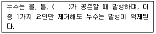
- 습도차
- 온도차
- 압력차
- 엔탈피차
(정답률: 57%)
63. 시설물의 안전 및 유지관리에 관한 특별법에서 다음과 같은 정리되는 용어는?
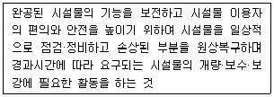
- 안전점검
- 유지관리
- 안전관리
- 유지보수
(정답률: 64%)
64. 다음 중 바탕체의 거동에 의한 옥상녹화용 방수층의 파손을 방지하기 위한 대책으로 가장 알맞은 것은?
- 방근층의 설치
- 거동 흡수 절연층의 구성
- 방수재 위에 수밀 코팅 처리
- 방수층 위에 플라스틱계 배수판 설치
(정답률: 42%)
65. 시멘트 모르타계 방수공사에서의 하자 방지 대책으로 가장 알맞은 것은?
- 접합부위 용융시공
- 철저한 배합비 준수
- 반턱 이음 접합 방식 적용
- 겹침부 상단 1~2차 롤링 작업 실시
(정답률: 63%)
66. 실링재의 열화 요인과 가장 거리가 먼 것은?
- 기상조건
- 피로현상
- 조인트 변동
- 알칼리 반응
(정답률: 37%)
67. 누수균열 보수재료 중 수계 아크릴 겔 주입재에 관한 설명으로 옳지 않은 것은?
- 물과 반응하여 지수 효과를 확보한다.
- 경화 이후 연질의 재료 특성을 갖는다.
- 균열 거동 시 재료 파괴가 발생 할 수 있다.
- 습윤상태에서 균열 바탕제 표면과 완전 밀착성능이 우수하다.
(정답률: 40%)
68. 다음 설명에 알맞은 누수 균열 주입 공법은?
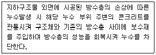
- 수직중력 주입공법
- 수직압력 주입공법
- 경사압력 주입공법
- 방수층 재형성 주입공법
(정답률: 60%)
69. 공동주택에서 방수공사에 적용되는 하자에 대한 담보책임기간은? (단, 300세대 이상인 공동주택의 경우)
- 2년
- 3년
- 5년
- 10년
(정답률: 64%)
70. 실링재의 파단원인 중 과도한 응력발생 요인에 속하지 않는 것은?
- 기포혼입
- 3면 접착
- 줄눈 폭 과소
- 줄눈 깊이 과대
(정답률: 44%)
71. 시트 방수재의 접합부 들듬에 관한 설명으로 옳지 않은 것은?
- 접합부에 롤링 작업을 실시 하였을 경우 주로 발생한다.
- 가장자리의 시공에 있어서 바탕 요철부에 대한 처리가 미흡할 경우 발생한다.
- 접합부 들뜸 방지를 위해 접합부 시공 시 너무 많은 매수가 겹치지 않도록 한다.
- 시트와 시트겹침부위에 단차로 인한 들뜸이 발생할 경우 물길이 형성되어 누수의 원인이 된다.
(정답률: 55%)
72. 누수균열을 보수하고자 하는 경우, 사전에 검토·확인하여야 하는 사항과 가장 거리가 먼 것은?
- 누수량(수압 및 수량)
- 기존 구조물 시공업체
- 누수균열의 폭과 깊이
- 기존 방수층의 존재 유·무
(정답률: 66%)
73. 바탕면에서 발생하는 습기를 외부로 배출시키기 위해 사용되는 것은?
- 드레인
- 탈기장치
- 조인트캡
- 본드 브레이커
(정답률: 40%)
74. 콘크리트 구조물의 거동 및 균열 발생에 따라 방수층이 파괴되는 현상은?
- 방수층 파단
- 방수층 박리
- 방수층 들뜸
- 방수층 부풀음
(정답률: 59%)
75. 콘크리트 바탕조건이 습윤조건인 일반 구조물에 수직중력주입으로 누수보수공사를 하려고 한다. 구조물 환경과의 적합성 검토 없이 표준에 따라 적용 가능한 누수보수재는?
- 시멘트계 주입재
- 수계아크릴 겔 주입재
- 수계에폭시수지 주입재
- 합성고무계 폴리머 겔주입재
(정답률: 32%)
76. 다음 설명에 알맞은 방수공사의 하자 유형은?
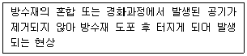
- 핀홀
- 부풀음
- 경화불량
- 풍압에 의한 들뜸
(정답률: 60%)
77. 다음 중 소규모의 평지붕이나 수조에 가장 적합한 누수 시험은?
- 살수 시험
- 담수 시험
- 통기 시험
- 박하 시험
(정답률: 63%)
78. 시트 방수공사에서 방수층 물고임에 관한 설명으로 옳지 않은 것은?
- 비상콘크리트의 물흐름 경사가 완만할 때 발생된다.
- 옥상 부위에 적용되는 대부분의 방수공사에서 나타날 수 있다.
- 시트 방수재의 경우 열에 의한 수축과 팽창으로 굴곡된 부위에서 발생한다.
- 방수층 물고임 방지를 위해 시트간 이음은 맞댐이음보다는 겹침이음으로 한다.
(정답률: 44%)
79. 도막 방수공사에서 발생되는 결함의 종류에 속하지 않는 것은?
- 핀홀
- 방수층 박리
- 방수층 부풀음
- 겹침부 열융착 불량
(정답률: 45%)
80. 루프 드레인 부위에서 발생할 수 있는 누수원인과 가장 거리가 먼 것은?
- 드레인 유지관리가 미흡한 경우
- 옥상 바닥의 구배가 불량한 경우
- 드레인 매설 부위가 부적절한 경우
- 드레인이 바탕면보다 낮게 시공되는 경우
(정답률: 70%)